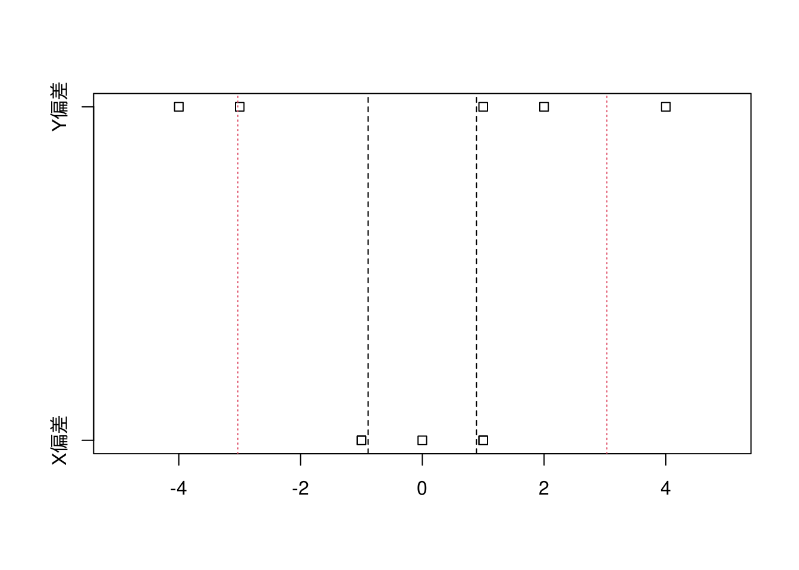

第3講 データの散らばり具合を見積もる統計量
3.1 データの散らばりやバラツキを知りたい
第2講で学んだ平均値（算術平均）は、データを代表する統計量で、ある一点（支点・重心）を示しているに過ぎません。データが平均値の周辺にどのように分布しているかはヒストグラムを使うことで視覚的には確認できますが、統計量として数値的に扱えた方がなにかと便利なはずです。
3.2 バスの到着時刻の例で分散を理解する
蛇足ですが実際の路線バスでは予定時刻より早く到着しないように調整運転がなされていますので、時刻より大幅に早着することは稀です。
x <- scan(file = "../data/P36_図表3-1.csv", sep = ",")
x## [1] 32 27 29 34 33 平均値を求めるmean()関数がありますが、ここでは平均値の計算式通りの計算を行っています。
`平均値` <- sum(x) / length(x)
`平均値`## [1] 31`偏差` = x - `平均値`
`偏差`## [1] 1 -4 -2 3 2偏差の総和は必ずゼロ（\(0\)）になります。
sum(`偏差`)## [1] 0 偏差の二乗和をデータの個数で割ったものは、（標本）分散と呼ばれます。不偏分散と呼ばれる分散は計算式が異なります。Rで分散を計算するvar()関数は不偏分散を求める関数です。
sum(`偏差` ^ 2) / length(x)## [1] 6.8 偏差の二乗平均値（$ = $）は標準偏差と呼ばれます。Rで標準偏差を計算するsd()関数は不偏分散のルートを取ったものです。
sqrt(sum(`偏差` ^ 2) / length(x))## [1] 2.607681
3.3 標準偏差の意味
x <- read.csv(file = "../data/P39_図表3-4.csv")
xｘ
mean <- x %>%
dplyr::summarise(`X平均値` = mean(X), `Y平均値` = mean(Y))
meanx %>%
dplyr::mutate(`X偏差` = X - mean$`X平均値`, `Y偏差` = Y - mean$`Y平均値`)x %>%
dplyr::mutate(`X偏差` = X - mean$`X平均値`, `Y偏差` = Y - mean$`Y平均値`) %>%
dplyr::summarise(`X標準偏差` = sqrt(sum(`X偏差` ^ 2) / length(X)),
`Y標準偏差` = sqrt(sum(`Y偏差` ^ 2) / length(Y)))偏差と標準偏差を可視化すると下図のようになり、XよりYの方が広範囲に分布していることが分かります。
x %>%
dplyr::mutate(`X偏差` = X - mean$`X平均値`, `Y偏差` = Y - mean$`Y平均値`) %>%
dplyr::select(-X, -Y) %>%
stripchart(xlim = c(-5, 5))
abline(v = c(-0.89, 0.89), lty = 2)
abline(v = c(-3.03, 3.03), lty = 3, col = 2)
3.4 度数分布表から標準偏差を求める
x <- read.csv(file = "../data/P40_図表3-6.csv")
x第2講の「2−3 度数分布表での平均値」で学んだように度数分布表から平均値（の近似値）は \[\mbox{平均値} \fallingdotseq \sum{(\mbox{階級値} \times \mbox{相対度数})}\] で求めることができます。
x %>%
dplyr::mutate(`AxB` = `A階級値` * `B相対度数`)`平均値` <- x %>%
dplyr::mutate(`AxB` = `A階級値` * `B相対度数`) %>%
dplyr::summarize(`平均値` = sum(`AxB`)) %>%
dplyr::pull(`平均値`)
`平均値`## [1] 2平均値を求められたので \[\mbox{階級の偏差（C階級値-平均値）} = \mbox{階級値} - \mbox{平均値}\] とすると度数分布表の計算値と同じ考え方を適用し \[\mbox{階級の偏差の二乗平均} = \sum{(\mbox{階級の偏差}^2 \times \mbox{相対度数})} = \mbox{分散}\] となります。
x %>%
dplyr::mutate(`C` = `A階級値` - `平均値`) %>%
dplyr::mutate(`C^2` = `C` ^ 2) %>%
dplyr::mutate(`C^2xB` = `C^2` * `B相対度数`) %>%
dplyr::select(`A階級値`, `C階級値-平均値` = `C`, `C^2`, `B相対度数`, `C^2xB`)x %>%
dplyr::mutate(`C` = `A階級値` - `平均値`) %>%
dplyr::mutate(`C^2` = `C` ^ 2) %>%
dplyr::mutate(`C^2xB` = `C^2` * `B相対度数`) %>%
dplyr::select(`A階級値`, `C階級値-平均値` = `C`, `C^2`, `B相対度数`, `C^2xB`) %>%
dplyr::summarise(`分散` = sum(`C^2xB`)) %>%
dplyr::mutate(`標準偏差` = sqrt(`分散`))練習問題
次の架空のデータの標準偏差を次のステップで計算してみよ。
`データ` <- scan(file = "../data/P42_練習問題_v.csv", sep = ",")
`データ`## [1] 6 4 6 6 6 3 7 2 2 8身長データの度数分布表から分散と標準偏差を求める
解答例
x %>%
dplyr::mutate(`AxB` = `A階級値` * `B相対度数`)`平均値` <- x %>%
dplyr::mutate(`AxB` = `A階級値` * `B相対度数`) %>%
dplyr::summarise(`平均値` = sum(`AxB`)) %>%
dplyr::pull(`平均値`)
`平均値`## [1] 157.7625x %>%
dplyr::mutate(`C` = `A階級値` - `平均値`) %>%
dplyr::mutate(`C^2` = `C` ^ 2) %>%
dplyr::mutate(`C^2xB` = `C^2` * `B相対度数`)freq_summary <- x %>%
dplyr::mutate(`C` = `A階級値` - `平均値`) %>%
dplyr::mutate(`C^2` = `C` ^ 2) %>%
dplyr::mutate(`C^2xB` = `C^2` * `B相対度数`) %>%
dplyr::summarise(`平均` = sum(`A階級値` * `B相対度数`),
`分散` = sum(`C^2xB`)) %>%
dplyr::mutate(`標準偏差` = sqrt(`分散`))
freq_summary生データで計算した場合
"../data/P16_図表1-1 .csv" %>%
readr::read_csv(col_names = FALSE, show_col_types = FALSE) %>%
tidyr::pivot_longer(cols = dplyr::starts_with("X"),
names_to = "name", values_to = "value") %>%
dplyr::arrange(name) %>%
dplyr::select(height = value) %>%
dplyr::mutate(`偏差` = height - mean(height)) %>%
dplyr::mutate(`偏差^2` = `偏差` ^ 2)raw_summary <- "../data/P16_図表1-1 .csv" %>%
readr::read_csv(col_names = FALSE, show_col_types = FALSE) %>%
tidyr::pivot_longer(cols = dplyr::starts_with("X"),
names_to = "name", values_to = "value") %>%
dplyr::arrange(name) %>%
dplyr::select(height = value) %>%
dplyr::mutate(`偏差` = height - mean(height)) %>%
dplyr::mutate(`偏差^2` = `偏差` ^ 2) %>%
dplyr::summarise(`平均` = sum(height) / length(height),
`分散` = sum(`偏差^2`) / length(height),
`標準偏差` = sqrt(`分散`))
raw_summary要約統計量を比べてみると以下のようになります。
freq_summary # 度数分布表からの要約統計量raw_summary # 生データからの要約統計量freq_summary - raw_summary # 両者の差